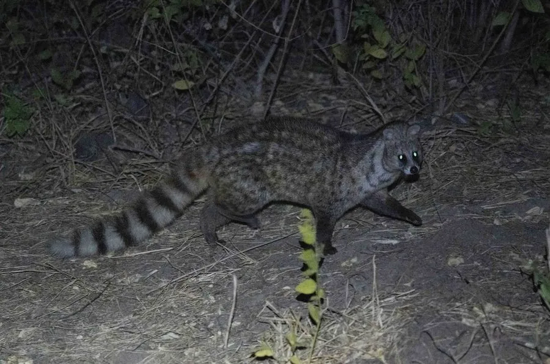

哺乳动物 · 动物界
小灵猫 Viverricula indica

亚洲南部的小型灵猫，体侧有黑色斑点、尾部带环纹，夜行独居，肛腺分泌物同样曾用于香料和药材。
- 分类
- 门脊索动物门纲哺乳纲目食肉目科灵猫科属小灵猫属
- 栖息环境
- 森林、灌丛、农田与村落附近，适应力较强
- 地理分布
- 中国南方、印度、东南亚等地的林缘和农田区域
- 保护级别
- IUCN 无危（LC）；中国国家一级保护动物
物种志
小灵猫体长 0.45–0.6 米，尾长 0.25–0.4 米，体重 2–4 kg，体形比大灵猫小。它的被毛为灰黄至浅褐色，背部有深色纵纹，体侧布满黑色斑点，尾部有 6–8 道黑白相间的环纹；面部尖长，四肢短，爪可伸缩。
小灵猫分布于中国南方、印度、东南亚等地的森林、灌丛、农田和村落附近，适应力较强。它以鼠类、昆虫、鸟类、蛙类、蛇和果实为食，多在夜间单独活动，善攀爬和游泳，白天躲藏在洞穴或灌木丛中。小灵猫的肛腺分泌物也有“灵猫香”之称，曾被用于香料和中药，因此遭到大量捕猎。雌性妊娠期约 70 天，每胎 2–5 仔。由于过度捕猎和栖息地变化，小灵猫数量明显下降，中国将其列为国家一级保护动物。
形态与习性
- 食性鼠类、昆虫、鸟类、蛙类、蛇与果实
- 体长0.45–0.6 m，尾长 0.25–0.4 m
- 体重2–4 kg
- 寿命野外约 8–12 年
- 繁殖妊娠期约 70 天，每胎 2–5 仔
- 活动节律夜间单独活动
- 尾环尾部有 6–8 道黑白环纹
趣味知识
- 小灵猫尾部有 6–8 道黑白相间的环纹，便于识别。
- 它的肛腺分泌物也曾被用作香料，因此遭到大量捕猎。
- 小灵猫适应力较强，农田和村落附近也能见到。
- 中国将小灵猫列为国家一级保护动物。